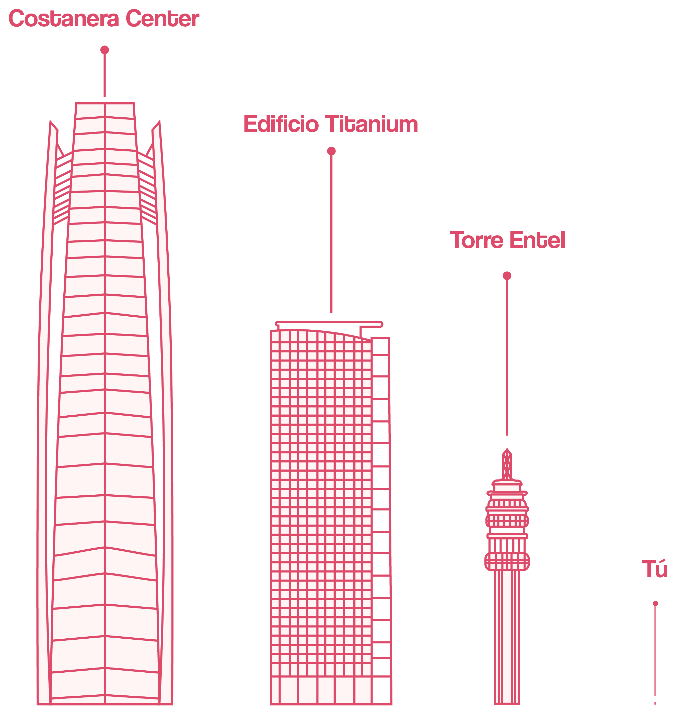

¿Cuál es el impacto de tu uso de toallitas?
¡Calcúlalo aquí!
Entonces, la cantidad de toallitas usadas a lo largo de tu vida equivalen a la altura de:
Esto lo medimos en base a la altura de diferentes edificios en Chile. Calculamos el largo de una toallita promedio y sumamos el total de metros para sacar la relación con las torres. Para hacer una comparación, este es el porte de una persona de 1,60 mts al lado de los edificios:
